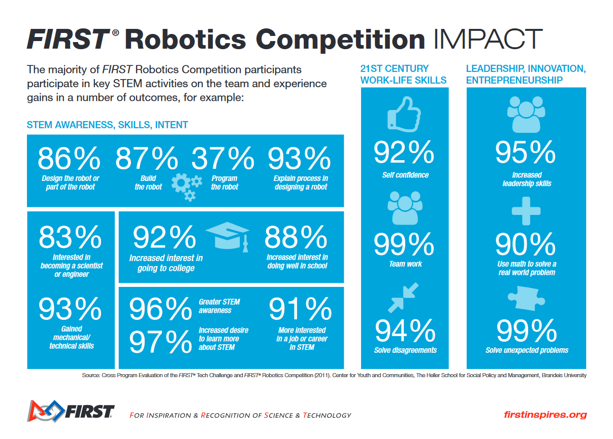

The FIRST Exhibit

For Inspiration and Recognition of Science and Technology, or FIRST, is the leading youth STEM education nonprofit in the world. FIRST gives kids the freedom to learn and create robots of their own in a competition format.
FIRST has three different programs:
- FIRST LEGO League
- FIRST Tech Challenge
- FIRST Robotics Competition
FIRST LEGO League
FIRST LEGO League, or FLL, is FIRST's program for younger kids, operating from ages 4-16. FLL has 3 parts, but the other two just have kids experiment, and don't have them build much.
FLL Challenge
FLL challenge is the section for grades 4-8. Student teams are challenged to complete as many tasks with a robot of their creation in a set amount of time. Under adult guidance, teams must design, build, and program a complicated LEGO robot. They then take their robot to a competition, where they compete against other teams.
Something to note about FIRST is that one of their guiding principles is the idea of "coopretition". Teams are competing against one another, yes, but teams are also highly encouraged to help other teams, make friends, and enjoy the experience.
FIRST Tech Challenge
FIRST Tech Challenge, or FTC, is a big step up from FLL. Made for grades 7-12, teams are given a game in September, and have to design, build, wire, program, and test their robot from scratch by as early as late October, when they have their competitions. FTC has students learn real, applicable skills in STEM.
FIRST Robotics Competition

FIRST Robotics Competition, or FRC, is another step up. For grades 9-12 only, FRC gives students from January to March to complete their robot. This is a longer period than FTC, but it is justified, as the robots can get quite large, and complex.
Money Management
FRC gets much more expensive than FTC, so teams often have to fundraiser a good chunk of money. Many teams manage to get sponsorships from various companies, mainly big tech companies like Boeing or NASA. Others don't get enough from that alone, and have to find other income.
Outreach
FRC teams are encouraged, and rewarded, for making an impact on their community. Especially with little kids, teams spread STEM ideas and education throughout their community, going to events, hosing events or summer camps, and starting FLL or FTC teams.
Impact of FIRST
FIRST has had a huge impact of thousands of lives, including my own. It is truly a wonderful program that should be offered in more places. Below is an infographic of the impact that they have.
